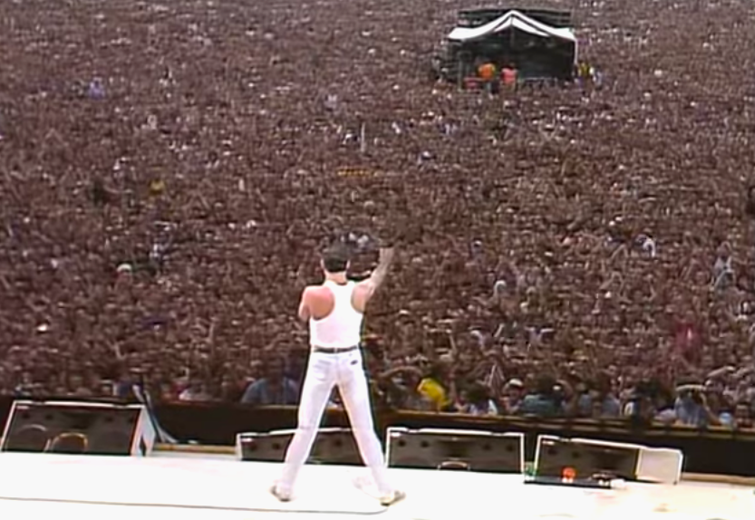

Nascido em 5 de setembro de 1946, em Zanzibar, atualmente conhecido como Tanzânia, Farrokh Bulsara adota como apelido "Freddie",
pela dificuldade de pronunciar o seu nome.Porém, em 1964, Freddie e sua familia se mudam para Londres e foi na Ealing Technical College and School of Art que o jovem começou
a cursar a graduação em Design Gráfico, e mesmo sendo formado em Desing, Freddie dedicou a sua vida toda somente à música. E sendo apaixonado pela música, Freddie
cantou em diversas bandas pequenas durante sua graduação, como a Roger Taylor (1949) e Brain May (1947). Porém, é quando Freddie substituiu o vocalista da banda smile, em que
ele cria e muda o nome da banda para Queen. E é em 1973, em que a banda lança seu primeiro albúm, chamado Queen. E é de uma música desse albúm, a "My Fairy King" em que Freddie
tirou o nome "Mercury", virando agora Freddie Mercury.
O Sucesso e a Carreira Solo
Já o disco que espalhou o sucesso do Queen mundialmente foi o Sheer Heart Attack (1974). E em 1975, em que é lançado o maior sucesso do Queen, a
música “Bohemian Rhapsody” que fez parte do álbum “A Night at the Opera“, essa música teve um sucesso mundial gigante, ganhando vários premios e batendo vários
recordes.
Em meados dos anos 1980, Freddie Mercury decidiu investir na carreira solo lançando o seu primeiro álbum solo intitulado "Mr. Bad Guy". O álbum apresentava uma variedade de estilos
musicais, incluindo pop, rock e música eletrônica. Uma das músicas mais conhecidas desse álbum foi "I Was Born to Love You", embora tenha tido sucesso moderado, o álbum não
alcançou o mesmo nível de popularidade dos trabalhos com o Queen. Porém a carreira solo de Mercury não dura muito tempo, já que em 1985, em um dos momentos mais emblemáticos para a banda
foi a aparição no concerto beneficente Live Aid, a partir de então a banda voltou a se reunir, lançando o disco A Kind Of Magic.

A Doença e a Morte
Freddie Mercury foi diagnosticado com
AIDS em 1987. E como Freddie mantia sua vida pessoal em sigilo, somento no dia 23 de novembro de 1991 o cantor divulga o comunicado:
"Desejo confirmar que fui testado como soropositivo e tenho AIDS. Achei correto manter essa informação em sigilo para proteger a privacidade das pessoas ao meu redor.
No entanto, chegou a hora dos meus amigos e fãs ao redor do mundo saberem a verdade e espero que todos se unam aos meus médicos e a todos os que estão no mundo na luta contra
essa terrível doença."
E no dia seguinte, Freddie morreu por pneumonia em sua mansão em Kensington (Londres).
A morte prematura, aos 45 anos de idade, foi consequência de complicações provocadas pelo HIV.